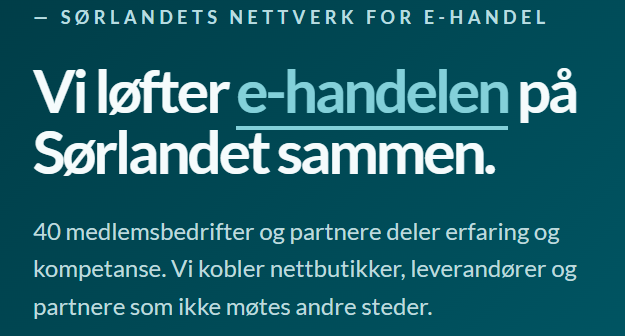

Status 1:
Denne status siden dekker informasjon om gruppens sammarbeid med E-waves frem til uke 38. Her vises en introduksjonsvideo til praksisgruppen, E-waves, status for praksisoppgaven og interresante funn.
Om E-waves
E-waves er et nettverk for e-handels bedrifter over Agder, med over 40 medlemmer. Gjennom medlemskapet får bedriftene mulighet å delta på arrangementer, dele på erfaring og lære av hverandre. Uavhengig av størrelse vil hver bedrift ha mulighet å styrke hverandre, og vil få tilgang til en rekke verktøy som kan benyttes. Et av disse verktøyene har gruppen som oppgave å videreutvikle før den lanseres.

Vår oppgave - Hjemmenettside og Wavey:
Oppgaven til praksisgruppen er delt i 2 deler:
1: Oppusse hjemmenettsiden
E-waves ønsker et helt nytt design for hjemmenettsiden sin, hvor de sørget for
å gjøre klart skissen. Gruppens oppgave var å føre skissen over til en faktisk
fungerende hjemmenettside. Arbeidet på nettsiden gjøres gjennom Wordpress, hvor
Elementor brukes som editor.
Etter oppussingen vil nettsiden oppdateres, og det
vil være mulig å se det nye designet på E-waves nettsiden. Det er gjort mye
fremgang på nettsiden, hvor gruppen har bare noen få aspekter før denne fasen er over.
2: Videreutvikle chatbotten Wavey
Wavey er et ulansert verktøy som skal være tilgjengelig for alle medlemmer av
E-waves.
Spesielle utfordringer og spennende funn
Skrive litt om dette tema?